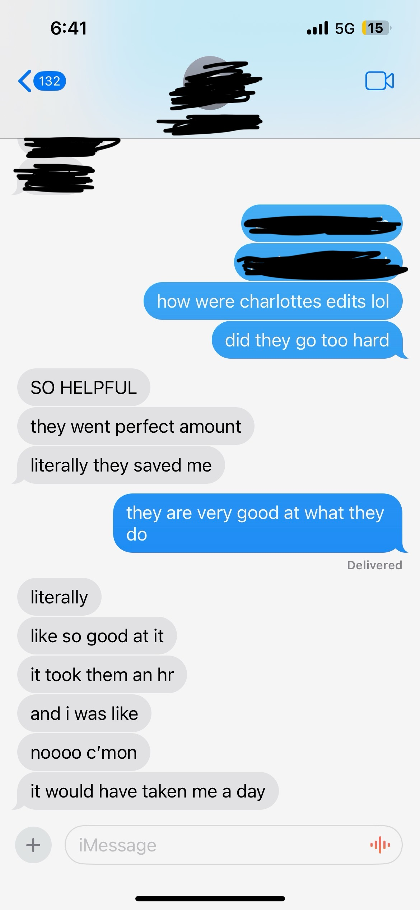

I offer editorial support at all levels from conceptualization to publication. E-mail me if you'd like to work together on any of the following:
- artist bios
- press kits
- manuscript editing, proofreading, workshopping
- liner notes and work descriptions (music and visual art)
I specialize in media theory, queer theory, contemporary art history (with a focus on video and new media art from the 1960s-present), disability studies, and alternative histories of computation and technology. I've written and provided editorial support for artists, musicians, poets, academics, magazines, small presses, and arts institutions... Let's link <3
